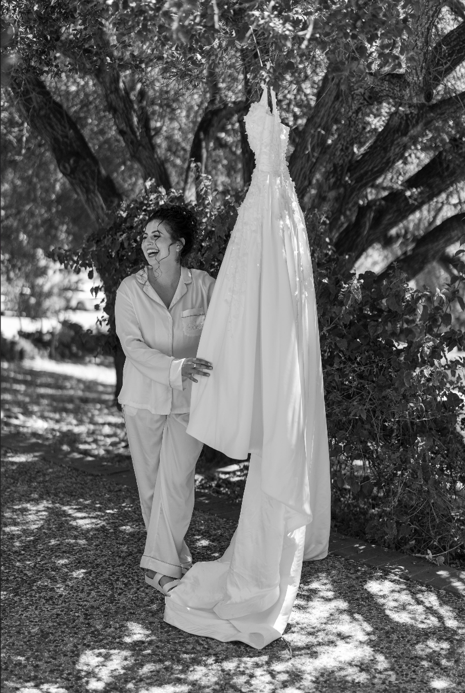

About
Hi, I’m Danit!
I’ve been a connector for as long as I can remember. I bring curiosity and bubbly energy to meeting people, and I love learning what makes someone themselves: their humor, values, and the little details that don’t fit neatly into a profile. Getting to know people is my favorite part of this work.
Jewish community has always been part of my life. I served as president of UCLA Hillel and later worked at Jewish Family & Children’s Services as a Volunteer and Program Manager. There, I built a vibrant community of young adults ages 20–40, who were passionate about giving back. I also matched older adults with volunteers who visited them regularly for social connection and companionship. I saw how much it matters to understand two people well enough to bring them together with care.
I started Meet Through Danit to bring warmth and personal care to finding love. I want to understand who you are, make introductions with intention, and offer a thoughtful perspective as you date. My hope is to help you grow through the experience and build a relationship that lasts. Whatever stage you’re in, you’ll have someone in your corner.

A little more about me
My dad is Israeli and Sephardic; my mom is American and Ashkenazi. Family, friends, and Jewish community have always been central in my life. I met my husband at Camp Ramah, and we’ve been together for over a decade.
I’m a Swiftie at heart, a ketchup enthusiast, and a massive fan of pesto pasta. I started a bake club in San Francisco, and I’ve spent six years perfecting my challah! I love to gab, and could talk for hours about the best curly hair tips. I firmly believe that dancing alone in your room to a favorite song can make almost any day better, and that the world would benefit from that practice.